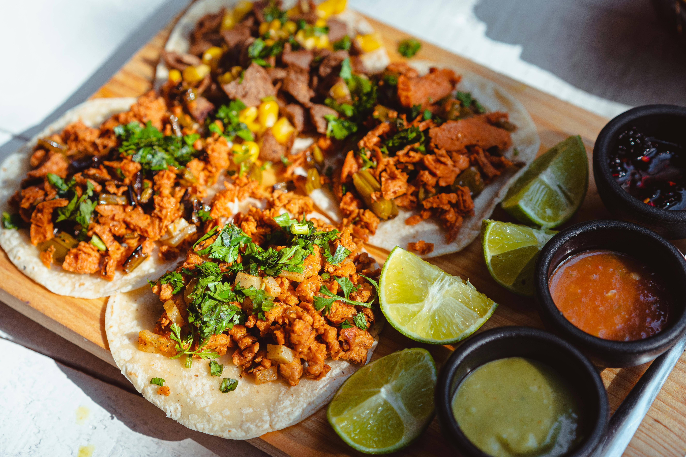

Lentil Tacos

Description
These lentil tacos are an easy and delicious way to have tacos for vegetarians. They can be vegan if you leave out the dairy (or use vegan alternatives)
- 2 cups dry brown lentils
- 1 small yellow onion
- 2 cloves garlic
- 2 tbsp olive oil
- 1 recipe taco seasoning
- 1 tsp salt
- 16 small corn tortillas
- 1 recipe pico de gallo
- 8 oz. sour cream (omit or change to make vegan)
- 2 small avocados
Directions
- In a skillet over medium heat, lightly toast the corn tortillas on both sides. If you are using a non-stick or cast iron pan, no oil is needed. If you are using a stainless steel or other cooking surface, you may need a quick spritz of non-stick spray. The tortillas should be lightly browned in some spots but still pliable.
- Sort and rinse the lentils. Bring 3 cups of water to a rolling boil in a medium pot. Once it reaches a boil, add the lentils. Let the pot return to a boil, then reduce the heat to low, place a lid on top. Allow the lentils to simmer for 20 minutes. After 20 minutes, taste the lentils to test the texture. They should be tender but not mushy. Drain the lentils in a colander.
- While the lentils are simmering, prepare the pico de gallo. Also mix together the taco seasoning, including the corn starch
- Dice the onion, mince the garlic and cook them with olive oil in a large skillet over medium heat until tender. Once the onion is tender, add the drained lentils, the taco seasoning, and about a half cup of water. Stir and cook over medium heat until the mixture has thickened (about 3-5 minutes). Season to taste with salt.
- Build the tacos, using about 1/4 cup of seasoned lentils per taco, one slice of avocado, a small amount of pico de gallo, and sour cream. If you have cilantro left over from the pico de gallo, it can also be used to top the tacos.
Home